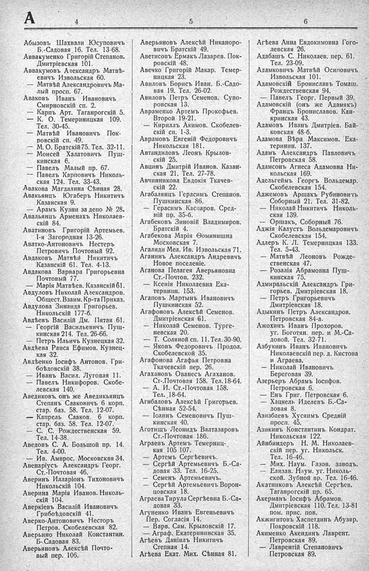

Лист источника 352
Скан

Распознанный текст
А 4
Абызовъ Шахвали Юсуповичъ
Б.-Садовая 16. Тел. 13-68.
Аввакуменко Григорій Степанов.
Дмитріевская 101.
Аввакумовъ Александръ Матвѣ-
евичъ Извольская 60.
— Матвѣй Александровичъ Ма-
лый просп. 67.
Аваковъ Иванъ Ивановичъ
Смирновскій сп. 2.
— Карпъ Арт. Таганрогскій 5.
— К. О. Темериницкая 109.
Тел. 30-45.
— Матвѣй Ивановичъ Пок-
ровскій сп. 49.
— М. О. Братскій 75. Тел. 32-11.
— Моисей Халатовичъ Пуш-
кинская 6.
— Павелъ Малый пр. 67.
— Павелъ Карповичъ Николь-
ская 124. Тел. 33-43.
Авакова Магдалина Сѣнная 28.
Авакьянцъ Югаберъ Никитичь
Казанская 9.
— Арамъ Кузни за депо № 28.
Авальянцъ Арменахъ Николаев-
скій 84.
Аватиновъ Григорій Артемьев.
1-я Загородная 13-26.
Аватко-Антоновичъ Нестеръ
Петровичъ Почтовый 92.
Авдаковъ Матвѣй Никитичъ
Казанскій 61. Тел. 4-13.
Авдакова Варвара Григорьевна
Почтовый 77.
— Марія Матвѣев. Казанскій 61.
Авдуловъ Николай Александров.
Общест. Взаим. Кр-та Приказ.
Авдулова Зинаида Григорьев.
Никольскій 177-б.
Авдѣевъ Василій Дм. Пятая 61.
— Георгій Васильевичъ Пуш-
кинская 214. Тел. 26-66.
— Петръ Ильичъ Кузнецкая 32.
Авдѣева Раиса Ефимов. Кузнец-
кая 32.
Авдѣенко Іосифъ Антонов. Гри-
боѣдовскій 38.
— Иванъ Васил. Луговая 11.
— Павелъ Никифоров. Скобе-
левская 140.
Аведиковъ онъ же Аведикьянцъ
Степанъ Сааковичъ 6 корп.
стар. баз. 58. Тел. 12-07.
— Капрель Сааков. 6 корп.
стар. баз. 58. Тел. 12-07.
— С. С. Рождественская 59.
Тел. 14-38.
Аведовъ С. А. Большой пр. 14.
Тел. 4-00.
— Ив. Амврос. Московская 34.
Авенаріусъ Александръ Георг.
Ст.-Почтовая 46.
Аверинъ Илларіонъ Тихоновичъ
Никольскій 104.
Аверина Марія Иванов. Николь-
скій 104.
Аверкіевъ Василій Ивановичъ
Грибоѣдовскій 41.
Аверко-Антоновичъ Несторъ
Петров. Скобелевская 82.
Аверьино Николай Константин.
Б.-Садовая 83.
Аверьяновъ Алексѣй Почто-
вый пер. 106.
5
Аверьяновъ Алексѣй Никаноро-
вичъ Братскій 49.
Аветисовъ Ермакъ Лазарев. Пок-
ровскій 48.
Авечко Григорій Макар. Темер-
ницкая 23.
Авиловъ Борисъ Иван. Б.-Садо-
вая 19. Тел. 26-02.
Авиловъ Петръ Семенов. Суво-
ровская 13.
Авраменко Артемъ Прокофьев.
Второй 19-21.
— Кириллъ Акимов. Скобелев-
скій сп. 1-3.
Аврамовъ Евгеній Федоровичъ
Никольская 181.
Автандиловъ Леонъ Крылов-
скій 25.
Авцинъ Дмитрій Иванов. Казан-
ская 21. Тел. 27-78.
Авчинникова Евдокія Ткачев-
скій 22.
Агабалянцъ Герасимъ Степанов.
Пушкинская 86.
— Герасимъ Каспаров. Сред-
ній пр. 35-б.
Агабековъ Зиновій Владимиров.
Братскій 4.
Агабекова Марія Ѳоминишна
Московская 7.
Агалиди Мел. Ив. Извольская 71.
Аганинъ Александръ Андревичъ
Новое поселеніе.
Аганова Пелагея Аверьяновна
Ст.-Почтов. 232.
— Ксенія Николаевна Ека-
теринин. 153.
Агаповъ Мартынъ Ивановичъ
Пушкинская 52.
Агафоновъ Алексѣй Семенов.
Дмитріевская 61.
— Николай Семенов. Турге-
невская 20.
— Т. Соляной сп. 11. Тел. 30-90.
— Яковъ Федоровичъ Продол.
Скобелевской 35.
Агафонова Агафья Петровна
Ткачевскій пер. 26.
Агахановъ Ованесъ Агаханов.
Ст.-Почтовая 158. Тел. 18-64.
— А. И. Ст.-Почтовая 158.
Тел. 18-64.
Агибаловъ Алексѣй Григорьев.
Сѣнная 52-54.
— Іоаннъ Семеновичъ Пуш-
кинская 40.
Аготищъ Леонидъ Валтазаровъ
Ст.-Почтовая 186.
Аграевъ Артемъ Темерниц-
кая 105 107.
— Артемъ Сергѣевичъ.
— Сергѣй Артемьевичъ Б.-Са-
довая 33. Тел. 16-25.
— Семенъ Артемьевичъ.
— Сергѣй Артемьевичъ Ворон-
цовская 18.
Аграева Тирула Сергѣевна Б.-Са-
довая 33.
Агуненко Иванъ Евгеньевичъ
Пер. Согласія 14.
— Варв. Сам. Крыловскій 17.
— Аграф. Екатерининская 35.
Агѣевъ Даніилъ Никитичъ
Степная 14.
Агѣева Екат. Мих. Сѣнная 81.
6
Агѣева Анна Евдокимовна Гого-
левская 26.
Адабашъ С. Николаев. пер. 61.
Тел. 23-09.
Адамковичъ Матвѣй Осиповичъ
Извольская 101.
Адамовскій Брониславъ Томаш.
Рождественская 94.
— Павелъ Георг. Первый 39.
Адамовскій (онъ же Адамякъ)
Францъ Брониславов. Кан-
кринская 43.
Адамовъ Иванъ Дмитріев. Бай-
ковская 48-б.
Адамова Вѣра Максимов. Ека-
теринин. 137.
Адамъ Александръ Павловичъ
Петровская 58.
Адамсонъ Агнеса Адамовна Ни-
кольская 169.
Адельгеймъ Георгъ Вольдемар.
Скобелевская 154.
Аджемовъ Аршакъ Рубиновичъ
Соборный 21. Тел. 31-82.
— Николай Никитичъ Николь-
ская 139.
— Оршакъ, Соборный 76.
Аджія Калустъ Вольдемаровичъ
Скобелевская 154.
Адлеръ К. Л. Темерницкая 133.
Тел. 5-43.
— Матвѣй Леоновъ Рожде-
ственская 47.
— Розалія Абрамовна Пуш-
кинская 75.
Адмиральскій Александръ Гри-
горьев. Дмитріевская 18.
— Петръ Григорьевичъ
Дмитріевская 18.
Адыкинъ Петръ Александров.
Петровская 84-а.
Ажохинъ Иванъ Прохоров.
уг. Боготян. пер. и М.-Са-
довой. Тел. 32-71.
Азбукинъ Иванъ Ивановичъ
Николаевскій пер. д. Кистова
и Аграева.
— Николай Ивановичъ
Береговая 39.
Азерьеръ Абрамъ Іосифов.
Петровская 6.
— Енъ Григ. Петровская 6.
— Хацкель Иделевъ Б.-Са-
ловая 8.
Азизбаевъ Хусяимъ Средній
просп. 45.
Азикинъ Константинъ Кондрат.
Никольская 122.
Айнбиндеръ Н. М. Николаев-
скій пер. уг. Никольск.
Тел. 16-46.
— Мих. Наум. Газов. заводъ.
— Елизав. Наум. уг. Николь-
ской. Зубной вр. Тел. 16-46.
Акатниковъ Алексѣй Сергѣев.
Таганрогскій пр. 65.
Акерманъ Іосифъ Абрамов.
Дмитріевская 110. Тел. 13-81
пом. прис. пов.
Акжигитовъ Хаспетдинъ Абузяр.
Покровскій 118.
Акименко Акендинъ Лаврент.
Петровская 89.
— Лаврентій Степановичъ
Петровская 89.